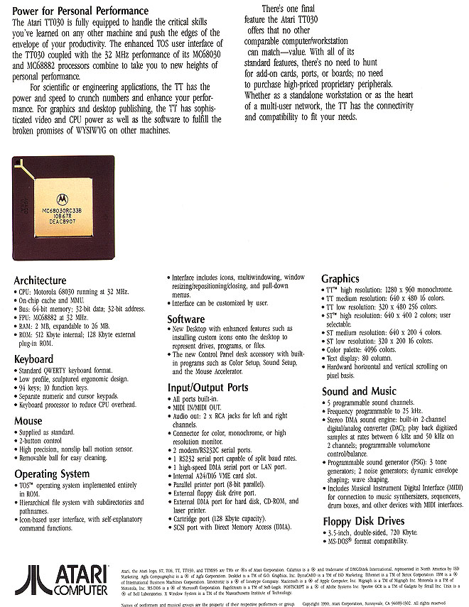

The Atari TT030 was Atari's crown jewel of computer systems up until the
Atari Falcon030 became available 2 years later. However its
a toss up between the two systems as to which one is better.
Originally the Atari TT030 was to come with a MC68030 at 32Mhz and the
units initial run was done with those processors and that speed.
However problems plagued the initial run and 32mhz processors were swapped
out and 16mhz version were put in there place. The later run
of TT030's did have issues resolved and were sold in the 32Mhz version.

The TT030 case designed
by Ira Velinksy used a unique and attractive module-ized design.
The hard drive and the CPU are seperated from one another in the case and
allowed for the hard drive to be easily accessed by one underside screw
for upgrades or repair. The system sported some well
designed features including an industry standard VME expansion slot for
video and network cards. Memory was supplied by standard SIMM
modules so upgrade and replacement was easily available. A
720K and then later a 1.44MB 3.5" MS-DOS format compatible floppy drive
for easy swapping of data between the TT and an MS-DOS based system.
Although under-used and not exploited to its full potential, the TT030
as well as the Mega STe and the Falcon030 all had Apple local-Talk(tm)
compatible LAN ports on them.
Technical Specifications
